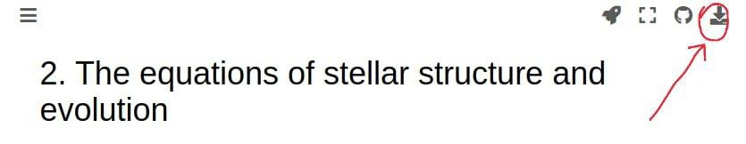
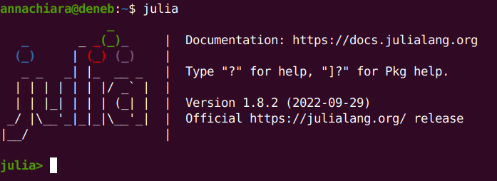
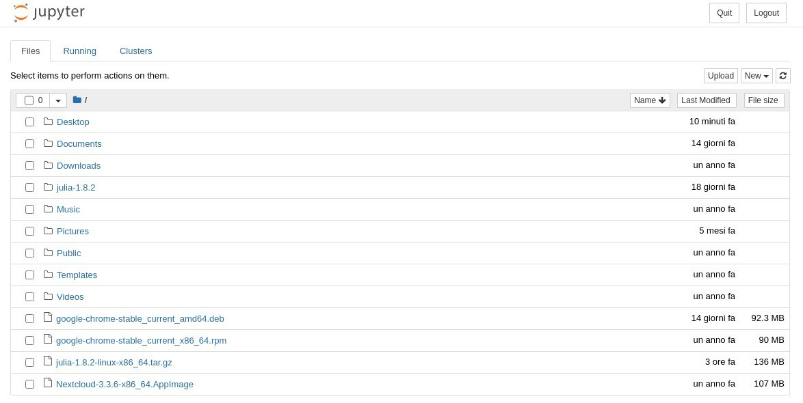
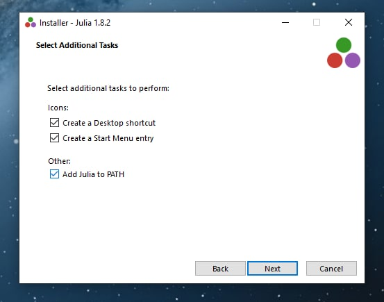
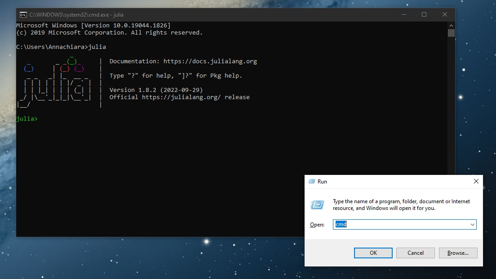
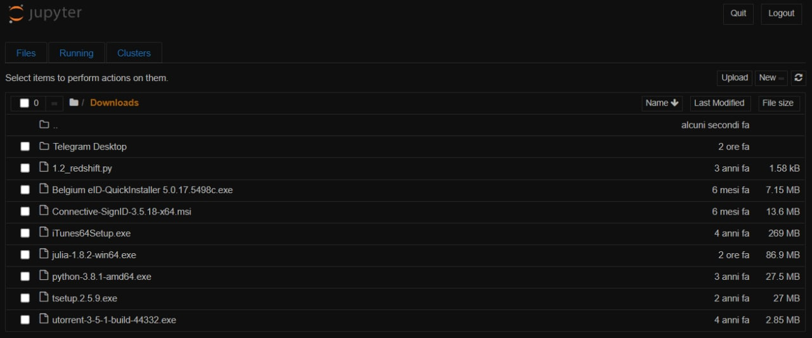

Instructions
Contents
1. Instructions#
The following are some instructions on how to get a physical notebook (.ipynb extension) out of the chapters of these lecture notes, and compile it locally on your machines. First of all, which chapter do you want to get your hands on? Choose your favorite one. My favorite will be: “2. The equations of stellar structure and evolution” . Open that one and select the download symbol:

Then download the notebook .ipynb in your favorite directory. We’ll get back to this later.
1.1. Linux-based systems#
1.1.1. Getting Julia#
The provided notebooks are written in Julia (check out https://julialang.org/), so first step will be to install Julia in your Linux-based machines. Go to the page of the downloadable releases,
and download the version that suits your system in your home directory, which will have a name of this sort \home\annachiara. Be sure to download the latest stable release, avoid older versions.
In the following, I am going to assume that
-
You downloaded the compressed file
julia-1.8.2-linux-x86_64.tar.gz; -
Your home directory is called
HOME_DIR.
You should adapt the commands to the version you downloaded and the folder you chose.
We need to open a terminal, a command-line interface to communicate directly with your computer. To do so, press ctrl+shift+T on your keyboard. Type then the following commands:
# Move to the download directory
cd HOME_DIR
# Uncompress the .tar.gz
tar zxvf julia-1.8.2-linux-x86_64.tar.gz
This will create a folder called julia-1.8.2 in HOME_DIR. You can find your executable in HOME_DIR/julia-1.8.2/bin/julia.
1.1.2. Setting up Julia#
For saving time, we’ll add the path of your executable in your .bashrc file, which contains all the informations that your (bash) shell extracts at each shell session. To edit the .bashrc file, I am going to use the nano text editor, but you can use your favorite text editor. So
# Open the .bashrc file
nano ~/.bashrc
Copy and paste the following line at the bottom of the file:
alias julia=/HOME_DIR/julia-1.8.2/bin/julia
To save changes and exit from nano, you’ll have to press ctrl+X , then Y to accept to save the modified buffer and then enter. Now, everytime you’ll open a shell, you’ll be able to call Julia by simply typing
#Open Julia
julia
Try it and see the greeting message 😁

1.1.3. Getting the Julia notebook#
We want to get the Julia notebook now, to be able to execute an .ipynb file. Within Julia, type the following in your terminal:
# Open up the package manager
]
# Install the Julia notebook package
add IJulia
The installation of the notebook should take a few minutes. At the end, press ctrl+C to go out of the package manager. Within Julia, type
# Declare that you'll use the Julia notebook package
using IJulia
# Call the Julia notebook package
notebook()
If you’re asked to install Jupyter via Conda, accept by pressing Y+enter. This should get you Jupyter notebook, the web-based computing platform that will run your Julia notebooks in your favorite browser. This installation should also take a few minutes.
1.1.4. Open up your notebook#
Once Jupyter is launched, you should see a window popping up in your favorite browser. That window is going to show you an interactive platform that lists all your files in your HOME_DIR. Something like this:

At this point, you just need to find the .ipynb file you downloaded into your favorite directory in the first step. Open it, and the game is done ✅
1.2. Windows users#
1.2.1. Getting Julia#
The provided notebooks are written in Julia (check out https://julialang.org/), so first step will be to install Julia in your Windows machines. Julia is available for Windows 7 and later for both 32 bit and 64 bit versions. Go to the page of the downloadable releases,
and download the version that suits your system: note that The 32-bit Julia binaries work on both 32-bit and 64-bit Windows (x86 and x86_64), but the 64-bit Julia binaries only run on 64-bit Windows (x86_64). Also, note that you’re downloading an installer, which is supposed to do everything for you 😉
Download the installer in your Download, which will have a path of this sort C:\Users\Annachiara\Download. Be sure to download the latest stable release, avoid older versions.
In the following, I am going to assume that
-
You downloaded the compressed file
julia-1.8.2-win64.exe; -
Your Download directory is called
DOWN_DIR.
You should adapt the commands to the version you downloaded and the folder you chose.
Run the installer you just downloaded, by double clicking on the executable and giving permissions to install Julia in the suggested installation directory. Be sure to check the box asking you to “Add Julia to path”, because it will automatically add Julia to Environment Variables of your system! See screenshot below:

1.2.2. Open up Julia#
To open Julia we need to open a terminal, a command-line interface to communicate directly with your computer. To do so in your Windows machine, you’ll need to press the shortcut Windows+R to launch the “Run” box; afterwards, type “cmd” and then click “OK” to open the Command Prompt (see screenshot below).
Invoke Julia by simply typing julia and see the greeting message 😁
# Open Julia
julia

1.2.3. Getting the Julia notebook#
Once Julia is open and welcomes you, the steps to get the Julia notebook are more or less the same as you would do in Linux. Within Julia, type the following in your terminal:
# Open up the package manager
]
# Install the Julia notebook package
add IJulia
The installation of the notebook should take a few minutes. At the end, press ctrl+C to go out of the package manager. Within Julia, type
# Declare that you'll use the Julia notebook package
using IJulia
# Call the Julia notebook package
notebook()
If you are asked to install Jupyter via Conda, accept by pressing Y+enter. This should get you Jupyter notebook, the web-based computing platform that will run your Julia notebooks in your favorite browser. This installation should also take a few minutes.
1.2.4. Open up your notebook#
Once Jupyter is launched, you should see a window popping up in your favorite browser. That window is going to show you an interactive platform that lists all your files in your HOME_DOWN. Something like this:

At this point, you just need to find the .ipynb file you downloaded into your favorite directory in the first step. Open it, and the game is done ✅